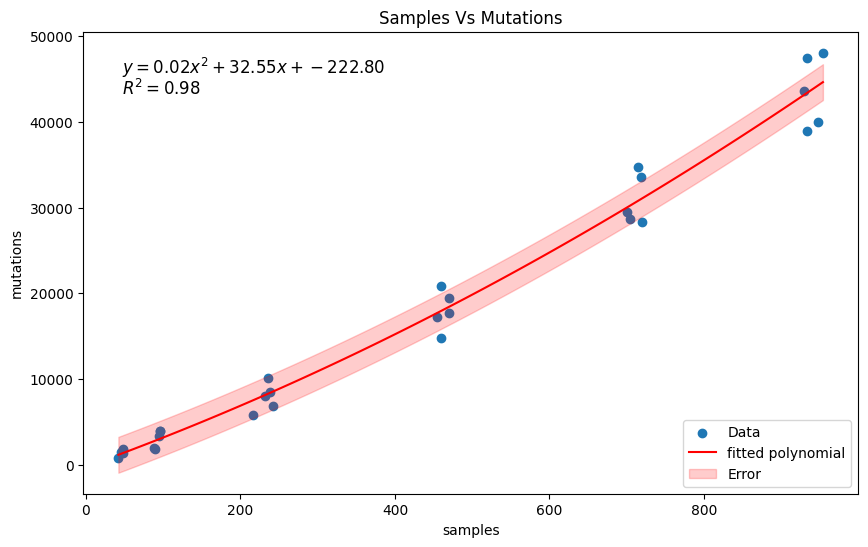

50K simulations results#
Let’s test the 50K simulations results:
from pathlib import Path
from collections import defaultdict
import tskit
import numpy as np
import pandas as pd
import seaborn as sns
import matplotlib.pyplot as plt
from tskitetude import get_project_dir
Let’s declare some stuff
repeats = 5
breed_size = [1, 2, 5, 10, 15, 20]
simulation = "50K_simulations"
reference_prefix = "results-reference"
compara_prefix = "results-compara"
chromosome = "26"
def collect_stats(results_prefix, simulation, chromosome, breed_size, repeats):
data = defaultdict(list)
prefix = get_project_dir() / results_prefix / simulation
for i in breed_size:
for j in range(repeats):
run = f"{i}_breeds-{j}-50K"
filename = prefix / run / "tsinfer" / f"SMARTER-OA-OAR3-forward-0.4.10-50K.focal.{chromosome}.trees"
if not filename.exists():
print(f"File {filename} does not exist")
continue
ts = tskit.load(filename)
# track some stats for tree object
data["breeds"] += [i]
data["repeat"] += [j]
data["filename"] += [filename]
data["sites"] += [ts.num_sites]
data["trees"] += [ts.num_trees]
data["edges"] += [ts.num_edges]
data["individuals"] += [ts.num_individuals]
data["samples"] += [ts.num_samples]
data["mutations"] += [ts.num_mutations]
data["nodes"] += [ts.num_nodes]
data["populations"] += [ts.num_populations]
return pd.DataFrame(data)
Read data from reference simulations:
reference = collect_stats(reference_prefix, simulation, chromosome, breed_size, repeats)
reference.head()
| breeds | repeat | filename | sites | trees | edges | individuals | samples | mutations | nodes | populations | |
|---|---|---|---|---|---|---|---|---|---|---|---|
| 0 | 1 | 0 | /home/core/TSKITetude/results-reference/50K_si... | 792 | 752 | 7717 | 24 | 48 | 792 | 1355 | 1 |
| 1 | 1 | 1 | /home/core/TSKITetude/results-reference/50K_si... | 773 | 732 | 7525 | 24 | 48 | 773 | 1309 | 1 |
| 2 | 1 | 2 | /home/core/TSKITetude/results-reference/50K_si... | 673 | 616 | 5974 | 23 | 46 | 673 | 1102 | 1 |
| 3 | 1 | 3 | /home/core/TSKITetude/results-reference/50K_si... | 766 | 697 | 6184 | 24 | 48 | 766 | 1168 | 1 |
| 4 | 1 | 4 | /home/core/TSKITetude/results-reference/50K_si... | 573 | 438 | 3153 | 21 | 42 | 573 | 707 | 1 |
Collect stats for compara:
compara = collect_stats(compara_prefix, simulation, chromosome, breed_size, repeats)
compara.head()
| breeds | repeat | filename | sites | trees | edges | individuals | samples | mutations | nodes | populations | |
|---|---|---|---|---|---|---|---|---|---|---|---|
| 0 | 1 | 0 | /home/core/TSKITetude/results-compara/50K_simu... | 791 | 557 | 5667 | 24 | 48 | 1865 | 1006 | 1 |
| 1 | 1 | 1 | /home/core/TSKITetude/results-compara/50K_simu... | 774 | 542 | 5664 | 24 | 48 | 1751 | 979 | 1 |
| 2 | 1 | 2 | /home/core/TSKITetude/results-compara/50K_simu... | 675 | 476 | 4577 | 23 | 46 | 1476 | 846 | 1 |
| 3 | 1 | 3 | /home/core/TSKITetude/results-compara/50K_simu... | 761 | 528 | 4822 | 24 | 48 | 1412 | 918 | 1 |
| 4 | 1 | 4 | /home/core/TSKITetude/results-compara/50K_simu... | 555 | 333 | 2443 | 21 | 42 | 786 | 553 | 1 |
sns.pairplot(reference[reference.columns.difference(['repeat'])], hue="breeds", palette="viridis")
<seaborn.axisgrid.PairGrid at 0x7f120ab576a0>
sns.pairplot(compara[compara.columns.difference(["repeat"])], hue="breeds", palette="viridis")
<seaborn.axisgrid.PairGrid at 0x7f1203a84070>
It seems that the number of mutation is higher using the compara approach instead of the reference approach. Let’s
try to model the number of mutations relying on the numer or samples. Try to fit a linear model using sns.regplot:
sns.regplot(data=compara, x="samples", y="mutations", ci=95)
<Axes: xlabel='samples', ylabel='mutations'>
Try to fit a 2nd degree polynomial model using np.polyfit:
# fit a polynomial to the data
coeffs = np.polyfit(compara['samples'], compara['mutations'], 2)
poly = np.poly1d(coeffs)
# generate values for x and y
x_vals = np.linspace(compara['samples'].min(), compara['samples'].max(), 100)
y_vals = poly(x_vals)
# calculate residuals
y_fit = poly(compara['samples'])
residuals = compara['mutations'] - y_fit
std_residuals = np.std(residuals)
# calculate R^2
ss_res = np.sum(residuals**2)
ss_tot = np.sum((compara['mutations'] - np.mean(compara['mutations']))**2)
r2 = 1 - (ss_res / ss_tot)
# plot the data
plt.figure(figsize=(10, 6))
plt.scatter(compara['samples'], compara['mutations'], label='Data')
plt.plot(x_vals, y_vals, color='red', label='fitted polynomial')
plt.fill_between(x_vals, y_vals - std_residuals, y_vals + std_residuals, color='red', alpha=0.2, label='Error')
# add formula to the plot
formula = f'$y = {coeffs[0]:.2f}x^2 + {coeffs[1]:.2f}x + {coeffs[2]:.2f}$'
r2_text = f'$R^2 = {r2:.2f}$'
plt.text(0.05, 0.95, formula, transform=plt.gca().transAxes, fontsize=12, verticalalignment='top')
plt.text(0.05, 0.90, r2_text, transform=plt.gca().transAxes, fontsize=12, verticalalignment='top')
# Add labels and title
plt.xlabel('samples')
plt.ylabel('mutations')
plt.title('Samples Vs Mutations')
plt.legend(loc='lower right')
# Show the plot
plt.show()
